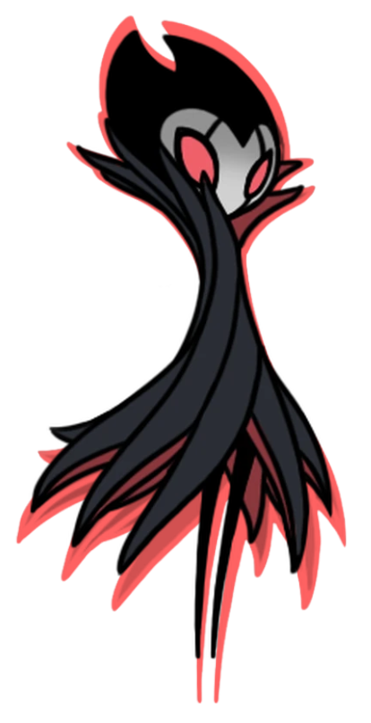

GRIMM
Mestre da Trupe

"Pelos sonhos eu viajo, ao chamado da lanterna Pelas chamas da queda de um reino, pela vida eterna."

História

Grimm é o mestre da Trupe Grimm, um misterioso circo itinerante. Na verdade, Grimm e sua Trupe viajam do Reino do Pesadelo para onde quer que a Lanterna do Pesadelo tenha sido acesa por acólitos. Eles coletam Chamas do Pesadelo de terras arruinadas para alimentar o ser sinistro que escraviza a Trupe, o Coração do Pesadelo. Seu ritual para alimentar o Coração do Pesadelo consiste em alimentar primeiro uma Criança Grimm com Chamas do Pesadelo. Em seguida, eles matam o Rei do Pesadelo para que ele renasça novamente por meio da Criança Grimm.
Eventos
Grimm e sua Trupe montam tendas em Dirtmouth assim que o Cavaleiro acende a Lanterna do Pesadelo. Dentro da tenda principal, Grimm aparece em um espetáculo de luz vermelha e fumaça. O Mestre da Trupe está ciente de que o Cavaleiro os chamou com a Lanterna e oferece a ele a opção de participar de seu Ritual. Ele então lhe dá a Criança Grimm e o encarrega de coletar as Chamas do Pesadelo reunidas por seus Grimmários em Hallownest. Com cada conjunto de três Chamas reunidas, Grimm faz com que a Criança Grimm as consuma para crescer. Após o segundo conjunto, o Mestre da Trupe testa a força do Cavaleiro em uma batalha ardente e teatral, em preparação para o confronto com o Rei do Pesadelo. Ele também o recompensa com um Encaixe de Amuleto. Depois de coletar o terceiro conjunto de Chamas, Grimm pode ser encontrado dormindo em seus aposentos. Como tal, ele está pronto para que o Cavaleiro use o Ferrão dos Sonhos nele e entre no Reino do Pesadelo. Se ele matar o Rei do Pesadelo com sucesso, o Ritual será concluído e a Trupe deixará Hallownest antes que o Cavaleiro acorde. A Trupe também desaparece se o Cavaleiro ajudar Brumm a bani-los em vez de enfrentar o Rei.
Localização
Grimm está localizado em Dirtmouth depois de ter sido convocado pela Lanterna do Pesadelo nos Penhascos Uivantes.

Localização em Dirtmouth
Imagens